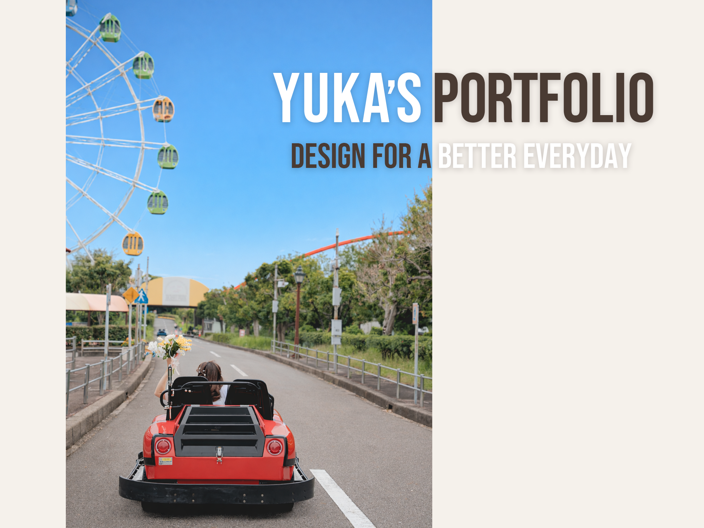
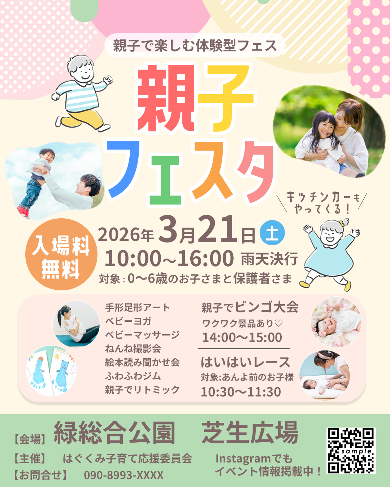
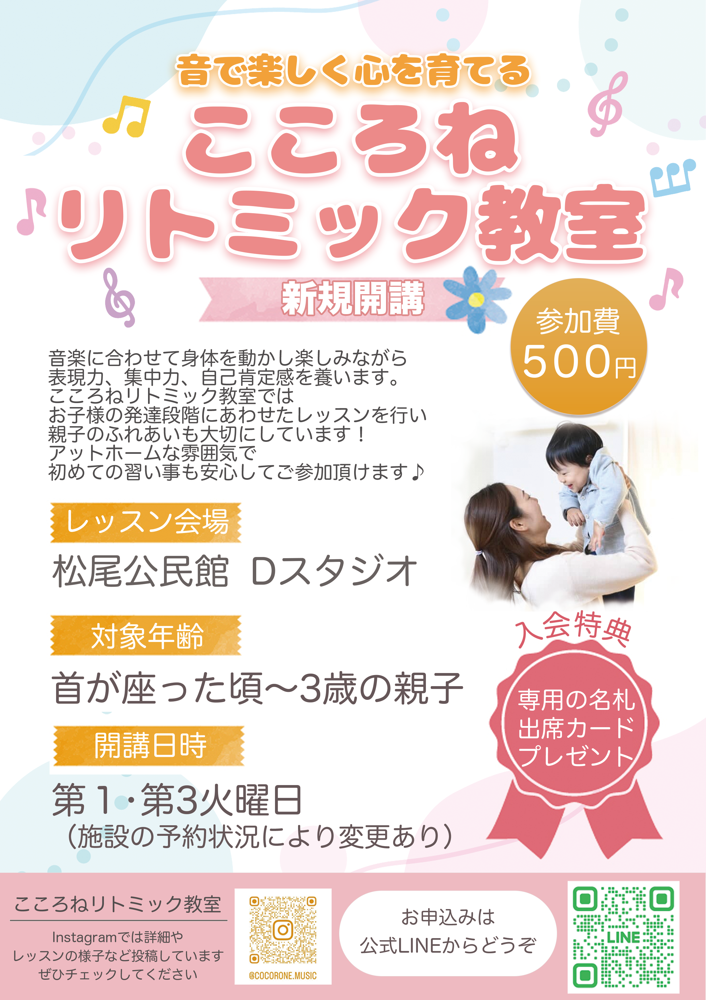
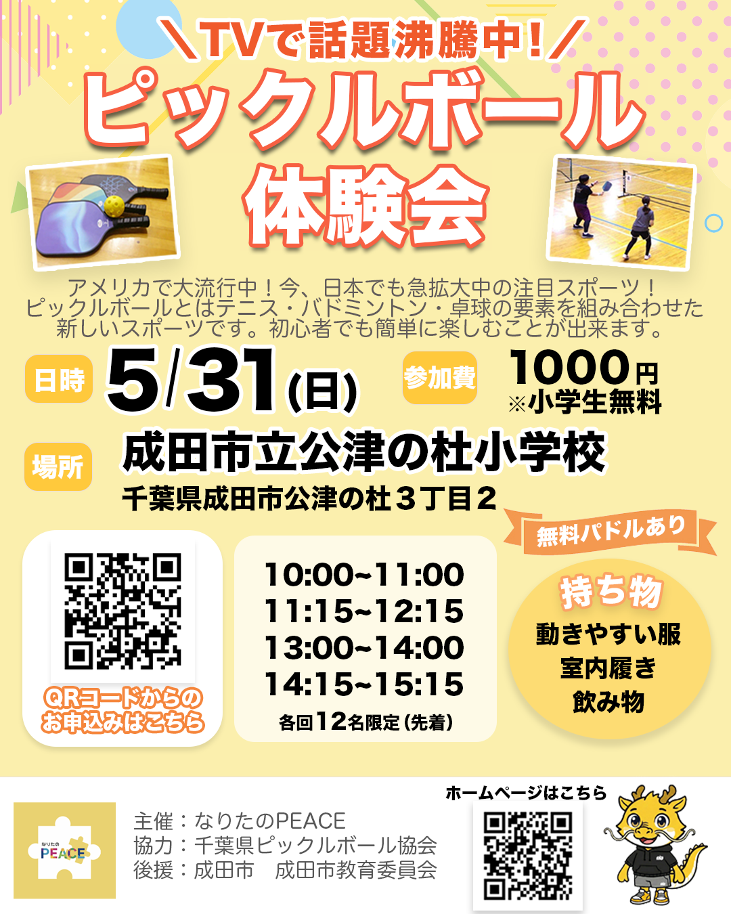
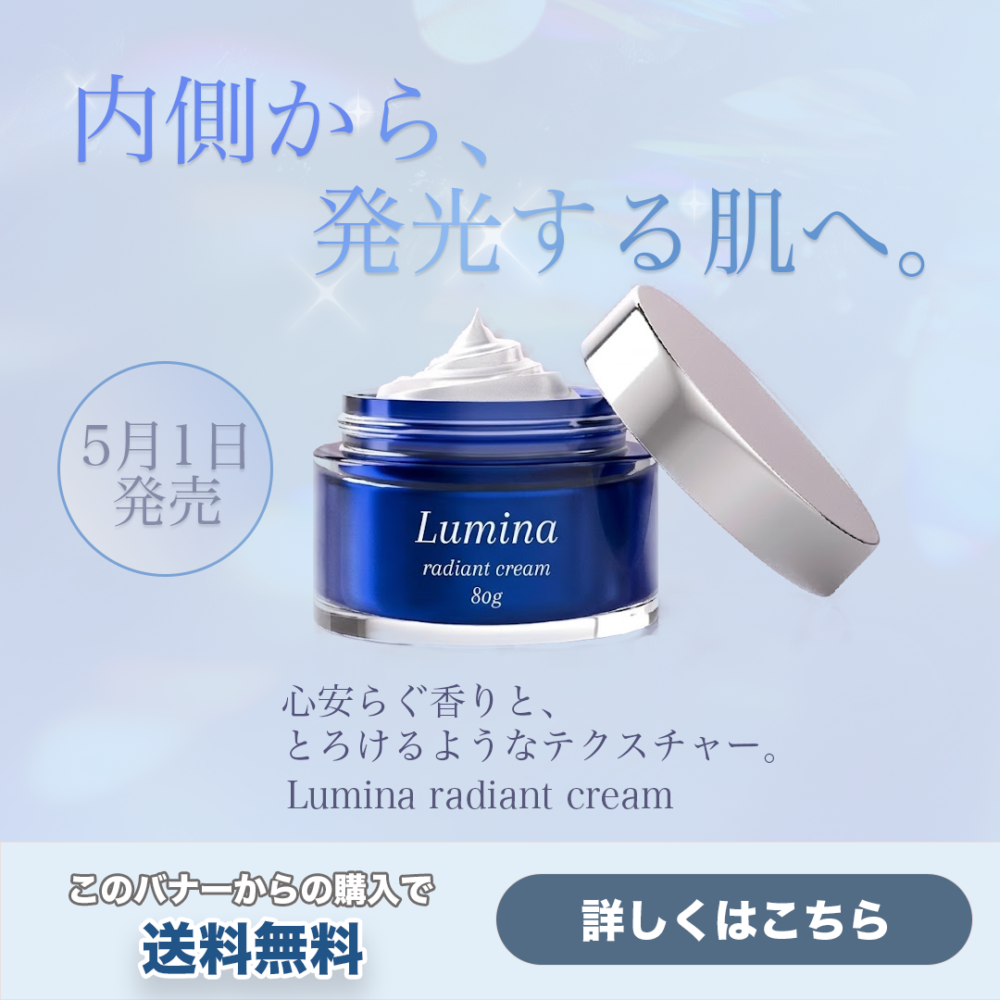
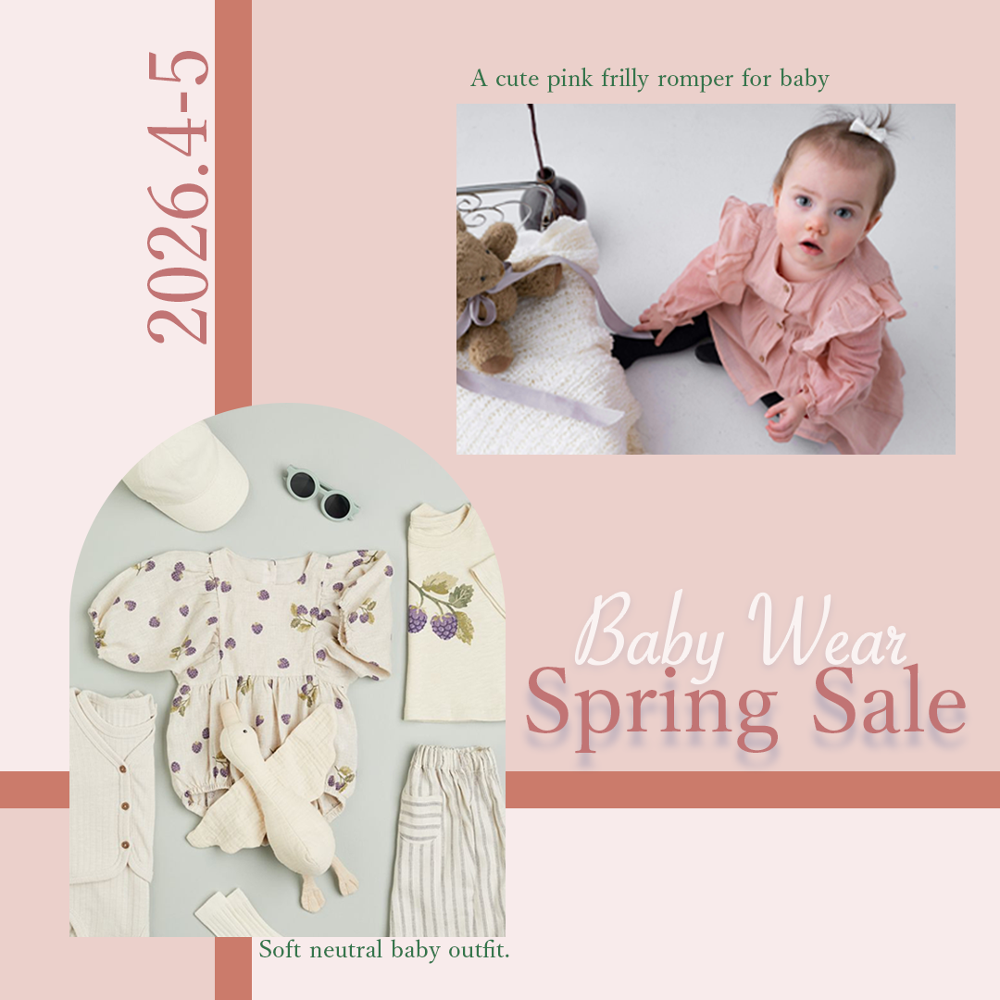
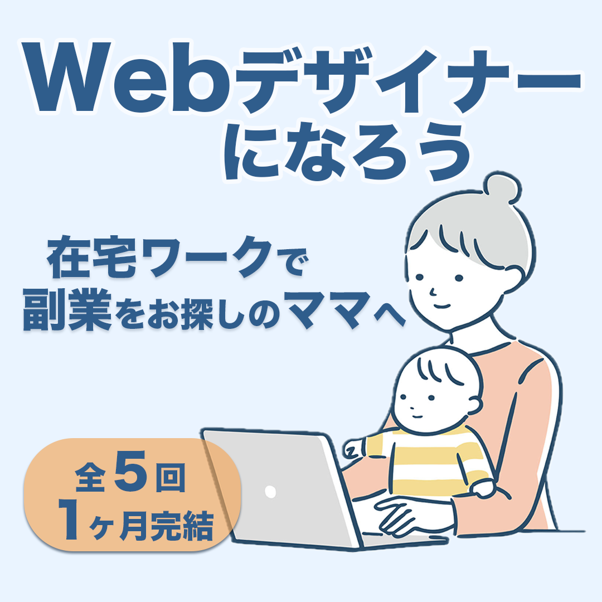
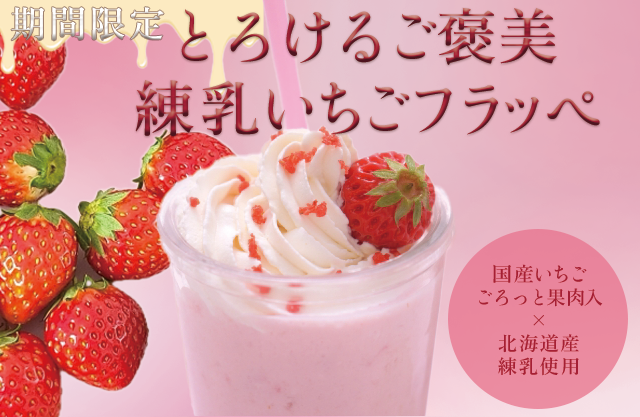
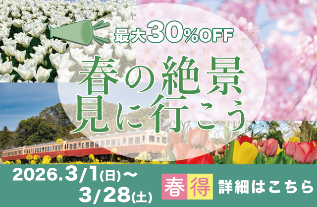
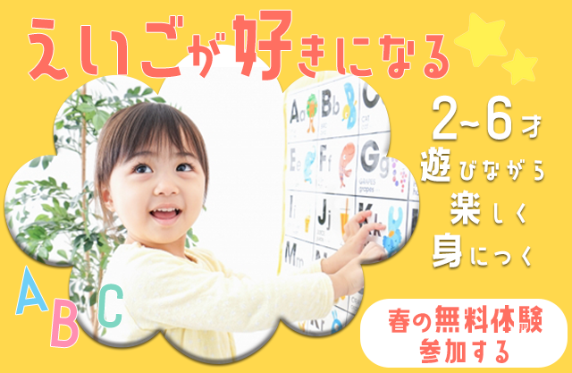

About

- Yuka Tsuge
- 1997年生まれ
- 千葉県在住
地元愛知県 元幼稚園教諭、保育士
結婚、出産を機に退職。
Instagram運用を通して
「伝わるデザイン」の面白さを知り
Webデザインを勉強中。
見る人に寄り添った
伝わるデザインを大切にしています。
趣味は編み物で娘の小物を作っています♩
Works
-

広告チラシ
親子で楽しめる体験型イベントであることが一目で伝わるよう、明るく親しみやすい配色とイラストで構成しました。 入場無料・日時・会場など重要情報を大きく配置し、読みやすさと集客導線を意識したデザインに仕上げています。
-

教室集客
子ども向け教室の安心感と温かさが伝わるよう、柔らかい配色と優しい雰囲気のデザインで制作しました。 対象年齢・レッスン内容・体験案内などの情報を見やすくまとめ、問い合わせにつながる構成を意識しています。
-

イベント広告チラシ
今話題のスポーツであることが伝わるよう、躍動感のあるビジュアルと視線誘導を意識したレイアウトで制作しました。 初心者でも参加しやすい雰囲気を大切にし、開催日時や場所などの情報がすぐに把握できるよう整理しています。
-

新製品広告
透明感と高級感を意識したビジュアル設計で 発売日、送料無料訴求、CTAを整理しクリック動線を重視しました。
-

ベビー服広告
InstagramでのWeb画像を想定し制作しました。 可愛らしいカラーで統一したデザインになっています。
-

在宅ワーク広告
シンプルなブルーで統一し 訴求したい点の視認性を高めたバナーを制作しました。
-

清潔感のあるブルーカラーでまとめ、成分や効果を一目でみやすく、水々しい印象のバナーを制作しました。
-

コスメセールバナー
セール感が一目で伝わるよう、数字を大きく配置しています。 コスメオンラインショップということで可愛らしいピンクやボルドーでまとめています。
-

季節限定フラッペ
いちごの瑞々しさが伝わる配色を意識しました。 いちごの甘さと可愛らしさが伝わるよう、配色や写真選定を工夫しています。
-

旅行キャンペーン
季節ならではの写真を使用し、旅行への意欲を引き立てられるようにしました。 また30％オフや期間の数字を強調しました。
-

子ども英語バナー
子供の英語教室ということでポップな楽しさと安心感が伝わるよう明るい配色にしました。 対象年齢をわかりやすく楽しくレッスンできることを一目見てわかるような工夫しました。
-

在宅ワーク講座
信頼感を意識し、落ち着いたトーンでまとめました。 ターゲットである女性や子育て中のママさんへ層を絞ったバナーにしました。
Contact
お仕事の依頼、承ります。
下記のボタンよりお問い合わせください。
(メールソフトが起動します)